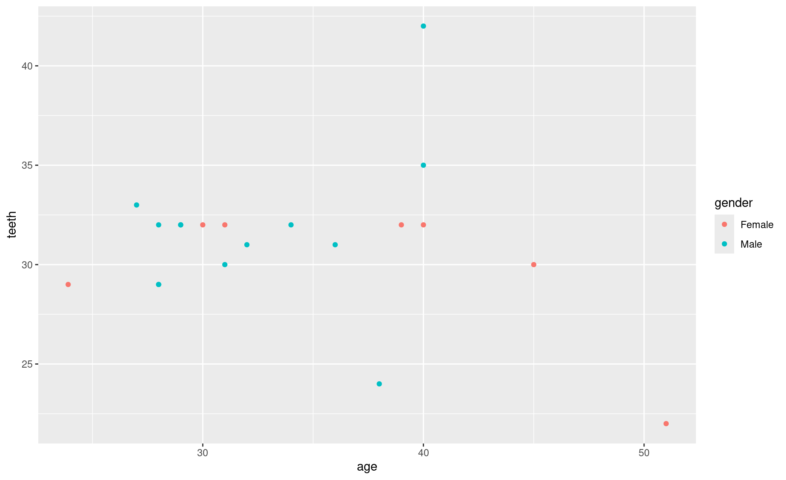
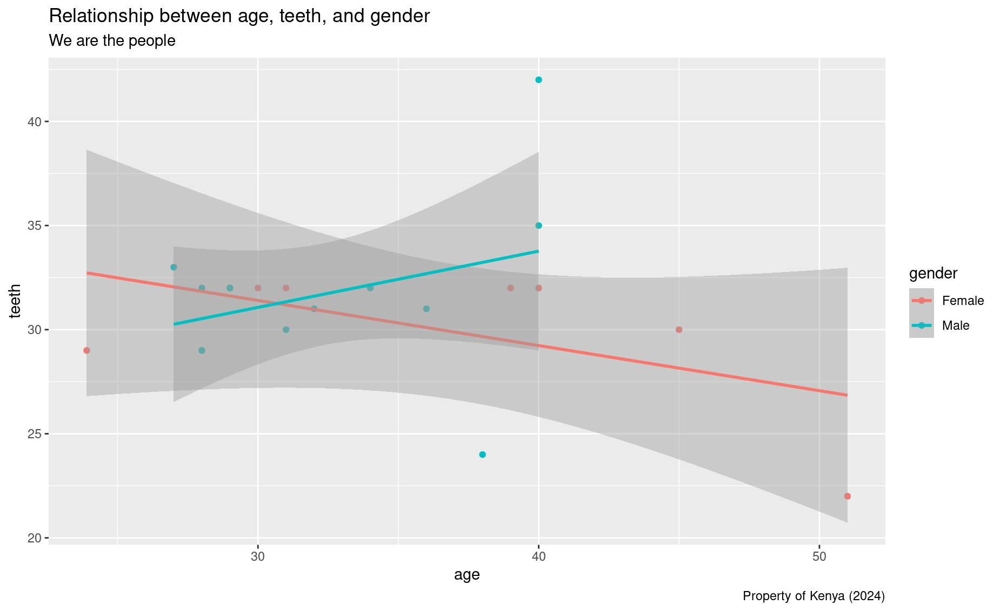
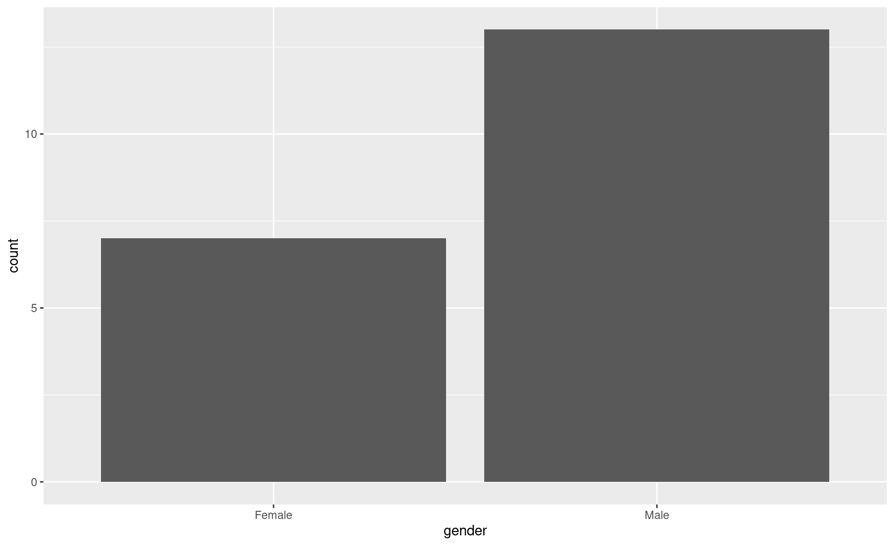

Module 6 Global health & ggplot
Introduction to ggplot2
Something very useful in the world of data is making plots. So let’s dive right in.
1. Open a new R script and name it ggplot.R.
2. Write code to load the following libraries: dplyr, readr, ggthemes, and ggplot2.
3. Load in your data and process the it a bit:
survey <- gsheet::gsheet2tbl('https://docs.google.com/spreadsheets/d/1Uq_F6SmDOH1q5AZaxcGOIJnO-2DKdc_HUSw3akXpI3w/edit?usp=sharing')
names(survey) <-
c(
'timestamp', # 'Timestamp',
'name', #'What is your name?',
'email', #'What is your email address?',
'experience', #'How much experience do you have in R?',
'alcohol', #'How many alcoholic beverages do you drink per week?',
'squat', #'How long do you think you can hold a wall squat (seconds)? (ie, the "imaginary chair")',
'egypt_or_france', #'Would you rather visit the pyramids of Egypt or the Eiffel tower of Paris?',
'bike', #'Do you know how to ride a bike?',
'swim', #'Do you know how to swim?',
'age', #'How old are you in years?',
'origin', #'Where are you from?',
'swahili', #'Do you know how to speak Swahili?',
'height', #'How tall are you in centimeters?',
'shoe', #'What size shoe do you wear (EU sizes)?',
'hand', #'Are you right-handed or left-handed?',
'happy', #'How happy do you consider yourself on a scale from 1 to 5, with 1 being extremely unhappy, 5 being extremely happy, and 3 being the average person',
'gender', #'What is your gender?',
'sing', #'Do you consider yourself better or worse than average at singing?',
'dance', #'Do you consider yourself better than average at dancing?',
'sleep', #'How many hours did you sleep last night?',
'net', #'Did you sleep under a mosquito net last night?',
'eat', #'Would you rather eat',
'money_or_love', #'What is better, money or love?',
'pizza_or_love', #'What is better, pizza or love?',
'adjective', #'What is the one adjective that best describes you',
'siblings',
'teeth',
'color',
'ivermectin',
'pilau_or_tchapati',
'race',
'live',
'kwale',
'movies')4. In order to make a plot we need a piece of paper or a canvas. So make a canvas.

5. Draw your x axis and your y axis (aka make your coordinates).
6. Map the data to the coordinates. Here we will map the data to the coordinates using points.
7. What if I want to color code these points based on people’s gender?

8. Add some labels. ggplot() automatically added axis titles and a legend, but we can add some more using the labs() function. Let’s add an overhead title, a sub-title, and a caption.
ggplot(data = survey,
aes(x = age,
y = teeth,
color = gender)) +
geom_point() +
labs(title = 'Relationship between age, teeth, and gender',
subtitle = 'We are the people',
caption = 'Property of Kenya (2024)')
9. Add a statistical summary like a smoothed regression line.
ggplot(data = survey,
aes(x = age,
y = teeth,
color = gender)) +
geom_point() +
labs(title = 'Relationship between age, teeth, and gender',
subtitle = 'We are the people',
caption = 'Property of Kenya (2024)') +
geom_smooth(method = 'lm')
10. We can also make separate plots for a variable by faceting.
ggplot(data = survey,
aes(x = age,
y = teeth,
color = gender)) +
geom_point() +
labs(title = 'Relationship between age, teeth, and gender',
subtitle = 'We are the people',
caption = 'Property of Kenya (2024)') +
geom_smooth(method = 'lm') +
facet_wrap(~gender)11. Let’s stylize the plot with a different theme.
ggplot(data = survey,
aes(x = age,
y = teeth,
color = gender)) +
geom_point() +
labs(title = 'Relationship between age, teeth, and gender',
subtitle = 'We are the people',
caption = 'Property of Kenya (2024)') +
geom_smooth(method = 'lm') +
facet_wrap(~money_or_love) +
theme_economist_white()Error in theme_economist_white(): could not find function "theme_economist_white"12. Let’s make a bar plot of gender to look at the data a little differently.

As you can see, we can make a lot of different types of charts in R. You can even make a new variable and use it in your plot, but let’s not get ahead of ourselves. So let’s learn by doing rather than lecturing and move on to a new dataset.
Gapminder exercises
This review exercise is useful immediately after you learn ggplot2 and dplyr.
First, let’s read in some data on health from the World Bank:
library(readr)
library(dplyr)
library(ggplot2)
library(gapminder)
Error in library(gapminder): there is no package called 'gapminder'
gm <- gapminder::gapminder
Error in loadNamespace(x): there is no package called 'gapminder'1. How many rows are in the dataset?
2. How many columns are in the dataset?
3. What are the names of the columns?
4. What is the oldest year in the dataset?
5. What is the country/year with the greatest population in the dataset?
6. Get the average GDP per capita for each continent in 1952.
7. Get the average GDP per capita for each continent for the most recent year in the dataset.
8. Average GDP is a bit misleading, since it does not take into account the relative size (in population) of the different countries (ie, China is a lot bigger than Cambodia). Look up the function weighted.mean. Use it to get the average life expectancy by continent for the most recent year in the dataset, weighted by population.
9. Make a barplot of the above table (ie, average life expectancy by continent, weighted by population).
10. Make a point plot in which the x-axis is country, and the y-axis is GDP. Add the line theme(axis.text.x = element_text(angle = 90)) in order to make the x-axis text vertically aligned. What’s the problem with this plot? How many points are there per country?
11. Make a new version of the above, but filter down to just the earliest year in the dataset.
12. Make a scatterplot of life expectancy and GDP per capita, just for 1972.
13. Make the same plot as above, but for the most recent year in the data.
14. Make the same plot as the above, but have the size of the points reflect the population.
15. Make the same plot as the above, but have the color of the points reflect the continent.
16. Filter the data down to just the most recent year in the data, and make a histogram (geom_histogram) showing the distribution of GDP per capita.
17. Get the average GDP per capita for each continent/year, weighted by the population of each country.
18. Using the data created above, make a plot in which the x-axis is year, the y-axis is (weighted) average GDP per capita, and the color of the lines reflects the content.
19. Make the same plot as the above, but facet the plot by continent.
20. Make the same plot as the above, but remove the coloring by continent.
21. Make a plot showing France’s population over time.
22. Make a plot showing all European countries’ population over time, with color reflecting the name of the country.
23. Create a variable called status. If GDP per capita is over 20,000, this should be “rich”; if between 5,000 and 20,000, this should be “middle”; if this is less than 5,000, this should be “poor”.
24. Create an object with the number of rich countries per year.
25. Create an object with the percentage of countries that were rich each year.
26. Create a plot showing the percentage of countries which were rich each year.
27. Create an object with the number of people living in poor countries each year.
28. Create a chart showing the number of people living in rich, medium, and poor countries per year (line chart, coloring by status).
29. Create a chart showing the life expectancy in Somalia over time.
30. Create a chart showing GDP per capita in Somalia over time.
31. Create a histogram of life expectancy for the most recent year in the data. Facet this chart by continent.
32. Create a barchart showing average continent-level GDP over time, weighted for population, with one bar for each year, stacked bars with the color of the bars indicating continent (geom_bar(position = 'stack')).
33. Create the same chart as above, but with bars side-by-side (geom_bar(position = 'dodge'))
34. Generate 3-5 more charts / tables that show interesting things about the data.
35. Make the above charts as aesthetically pleasing as possible.
More demography exercises
We’re going to work on some anonymized demography data, both households and individuals. Let’s start by creating a new script, naming it demography.R, and reading in some data as per the below:
library(readr)
library(dplyr)
library(ggplot2)
households <- readr::read_csv('https://datatrain.cc/data/anonymized_demography.csv')
people <- readr::read_csv('https://datatrain.cc/data/anonymized_demography_individuals.csv')What is the average age of people?
On average, who is older: men or women?
How many children are there in the dataset?
Make a histogram of age.
Make a smoothed histogram using
geom_densityof age.Make a smoothed histogram of age, but make different “fill” colors for men and women.
Make a point chart wherein the x-axis is sex and the y-axis is age.
Replace
geom_pointwithgeom_jitterso that the points don’t overlap so much.Make the points semi-transparent.
Make the points twice as large.
Give the plot a title, an x label, and a y label.
Add a “violin” plot to the plot.
Move the violin to behind the points.
Make the points colored by sex.
Replace the violin chart with a boxplot.
What is the breakdown of household heads and sex (ie, what number and percentage of household heads are male vs female)?
Make a barchart showing the number of households which are headed by men vs women.
What is the average age of household heads who are female vs. the average age of household heads who are male?
Make a chart showing the distribution of household heads’ age, which shows both males and females separately.
What do you think explains this difference in age?
Make a new variable indicating whether the household head is the oldest person in their household or not.
What percentage of female household heads are the oldest person in their household? And males?
What is the age of the youngest household head?
Create a simple scatter plot with longitude as the x value and latitude as the y value.
Make a table showing the distribution of wall types.
Make a chart to replace the above table.
Which fieldworker visited the most households?
Which cluster has the most cattle?
On what date were most households visited?